ИССЛЕДОВАНИЕ ПРИНЦИПОВ ОБРАЗОВАНИЯ КОДОВ И КОДИРУЮЩИХ УСТРОЙСТВ
Цель работы:
1. Изучить базовые принципы кодирования, методы кодирования информации, простейшие варианты кодов;
2. Выполнить кодирование заданной последовательности цифр различными кодами;
3. Проанализировать целесообразность использования тех или иных кодов;
4. Сделать вывод о помехозащищенности кодов и простоте применения кодов и кодирующих устройств.
Краткие теоретические сведения:
Код — это алгоритм (правило) сопоставления каждому конкретному сообщению строго определённой комбинации символов (знаков) (или сигналов).
Кодом также называется отдельная комбинация таких символов (знаков) — слово. Для различия этих терминов код в последнем значении ещё называется кодовым словом.
Кодирование информации – это процесс формирования определенного представления информации. В более узком смысле под термином «кодирование» часто понимают переход от одной формы представления информации к другой, более удобной для хранения, передачи или обработки.
В более узком смысле под термином «кодирование» часто понимают переход от одной формы представления информации к другой, более удобной для хранения, передачи или обработки.
Любой способ кодирования характеризуется наличием основы (алфавит, система координат, основание системы счисления и т.д.) и правил конструирования информационных образов на этой основе. Кодирование числовых данных осуществляется с помощью системы счисления.
Наиболее часто употребляемыми в настоящее время позиционными системами являются:
2 — двоичная (в дискретной математике, информатике, программировании);
3 — троичная;
8 — восьмеричная;
10 — десятичная (используется повсеместно);
12 — двенадцатеричная (счёт дюжинами);
16 — шестнадцатеричная (используется в программировании, информатике);
20 — двадцатеричная система счисления;
60 — шестидесятеричная (единицы измерения времени, измерение углов и, в частности, координат, долготы и широты).
В позиционных системах чем больше основание системы, тем меньшее количество разрядов (то есть записываемых цифр) требуется при записи числа.
Современный компьютер может обрабатывать числовую, текстовую, графическую, звуковую и видео информацию(таблица 1). Все эти виды информации в компьютере представлены в двоичном коде, т. е. используется алфавит состоящий всего из двух символов: 0 и 1. Связано это с тем, что удобно представлять информацию в виде последовательности электрических импульсов: импульс отсутствует (0), импульс есть (1). Такое кодирование принято называть двоичным, а сами логические последовательности нулей и единиц - машинным языком.
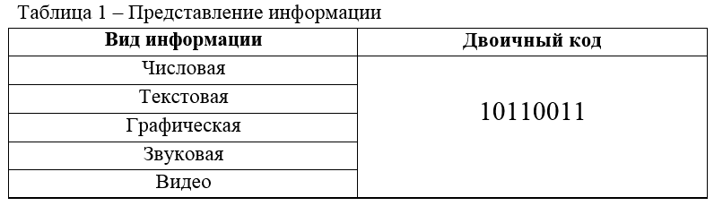
Базовые принципы кодирования информации
Кодирование чисел
Вопрос о кодировании чисел возникает по той причине, что в машину нельзя нерационально вводить числа в том виде, в котором они изображаются человеком на бумаге. Во-первых, нужно кодировать знак числа. Во-вторых, по различным причинам, которые будут рассмотрены ниже, приходится иногда кодировать и остальную часть числа.
Кодирование целых чисел производиться через их представление в двоичной системе счисления: именно в этом виде они и помещаются в ячейке. Один бит отводиться при этом для представления знака числа (нулем кодируется знак "плюс", единицей - "минус").
Для кодирования действительных чисел существует специальный формат чисел с плавающей запятой. Число при этом представляется в виде: N = M * qp, где M - мантисса, p - порядок числа N, q - основание системы счисления. Если при этом мантисса M удовлетворяет условию 0,1 <= | M | <= 1 то число N называют нормализованным.
Кодирование текста
Для кодирования букв и других символов, используемых в печатных документах, необходимо закрепить за каждым символом числовой номер – код. В англоязычных странах используются 26 прописных и 26 строчных букв (A … Z, a … z), 9 знаков препинания (. , : ! " ; ? ( ) ), пробел, 10 цифр, 5 знаков арифметических действий (+,-,*, /, ^) и специальные символы (№, %, _, #, $, &, >, <, |, \) – всего чуть больше 100 символов. Таким образом, для кодирования этих символов можно ограничиться максимальным 7-разрядным двоичным числом (от 0 до 1111111, в десятичной системе счисления – от 0 до 127).
Кодирование графической информации
В видеопамяти находится двоичная информация об изображении, выводимом на экран. Почти все создаваемые, обрабатываемые или просматриваемые с помощью компьютера изображения можно разделить на две большие части – растровую и векторную графику. Растровые изображения представляют собой однослойную сетку точек, называемых пикселами (pixel, от англ. picture element). Код пиксела содержит информации о его цвете.
В противоположность растровой графике векторное изображение многослойно. Каждый элемент векторного изображения – линия. Каждый элемент векторного изображения является объектом, который описывается с помощью математических уравнении. Сложные объекты (ломаные линии, различные геометрические фигуры) представляются в виде совокупности элементарных графических объектов.
Кодирование звука
В основе цифрового кодирования звука лежит – процесс преобразования колебаний воздуха в колебания электрического тока и последующая дискретизация аналогового электрического сигнала. Кодирование и воспроизведение звуковой информации осуществляется с помощью специальных программ (редактор звукозаписи).
Временная дискретизация – способ преобразования звука в цифровую форму путем разбивания звуковой волны на отдельные маленькие временные участки где амплитуды этих участков квантуются (им присваивается определенное значение). Это производится с помощью аналого-цифрового преобразователя, размещенного на звуковой плате. Таким образом, непрерывная зависимость амплитуды сигнала от времени заменяется дискретной последовательностью уровней громкости. Современные 16-битные звуковые карты кодируют 65536 различных уровней громкости или 16-битную глубину звука (каждому значению амплитуды звук. сигнала присваивается 16-битный код)
Качество кодирование звука зависит от:
1. глубины кодирования звука – количество уровней звука;
2. частоты дискретизации – количество изменений уровня сигнала в единицу.
Методика кодирования различными вариантами кодов
Представление числа в привычной форме «знак»-«величина», при которой старший разряд ячейки отводится под знак, а остальные – под запись числа в двоичной системе, называется прямым кодом двоичного числа. Например, прямой код двоичных чисел 1001 и -1001 для 8-разрядной ячейки равен 00001001 и 10001001 соответственно. Если двоичное число является положительным, то бит знака равен 0, если двоичное число отрицательное, то бит знака равен 1. Цифровые разряды прямого кода содержат модуль представляемого числа, что обеспечивает наглядность представления чисел в прямом коде (ПК).
Положительные числа в ЭВМ всегда представляются с помощью прямого кода (рисунок 1). Прямой код числа полностью совпадает с записью самого числа в ячейке машины. Прямой код отрицательного числа отличается от прямого кода соответствующего положительного числа лишь содержимым знакового разряда. Но отрицательные целые числа не представляются в ЭВМ с помощью прямого кода, для их представления используется так называемый дополнительный код.
Рисунок – 1. Формат двоичного числа со знаком в прямом коде: а – положительное число; б – отрицательное число
Обратный код числа, или дополнение до единицы это инвертирование прямого кода (поэтому его еще называют инверсный код). То есть все нули заменяются на единицы, а единицы на нули.
В обратном коде (ОК), так же как и в прямом коде, для обозначения знака положительного числа используется бит, равный нулю, и знака отрицательного – единица (рисунок 2). Обратный код отрицательного двоичного числа формируется дополнением модуля исходного числа нулями до самого старшего разряда модуля, а затем поразрядной заменой всех нулей числа на единицу и всех единиц на нули. В знаковом разряде обратного кода у положительных чисел будет 0, а у отрицательных – 1
Рисунок – 2. Формат двоичного числа со знаком в обратном коде: а – положительное число; б – отрицательное число
Пример.
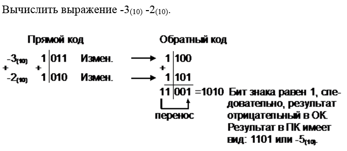
Пример.

Дополнительный код положительного числа равен прямому коду этого числа. Дополнительный код (ДК) строится следующим образом. Сначала формируется обратный код (ОК), а затем к младшему разряду (МЗР) добавляют 1. При выполнении арифметических операций положительные числа представляются в прямом коде (ПК), а отрицательные числа – в ДК, причем обратный перевод ДК в ПК осуществляется аналогичными операциями в той же последовательности.
На рисунке 3 рассмотрена цепь преобразований числа из ПК в ДК и обратно в двух вариантах.
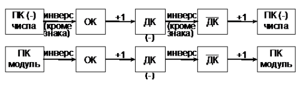
Рисунок – 3. Два варианта преобразования чисел из ПК в ДК и обратно
Использование ДК для представления отрицательных чисел устраняет двусмысленное представление нулевого результата (наличие двух нулей: +0 и -0), так как -0 исчезает.
В общем случае использованием ДК для записи отрицательных чисел можно перекрыть диапазон десятичных чисел от -2k-1 до +2k-1-1, где k – число используемых двоичных разрядов, включая знаковый. Так, с помощью одного байта можно представить десятичные числа от -128 до +127 либо только положительные числа от 0 до 255 (здесь под положительными числами понимаются числа без знака).
Пример.
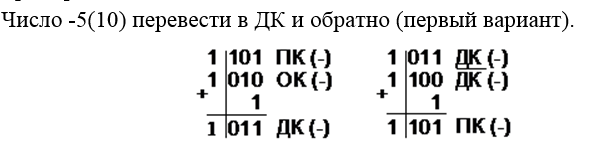
Пример.
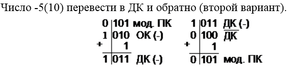
Пример.
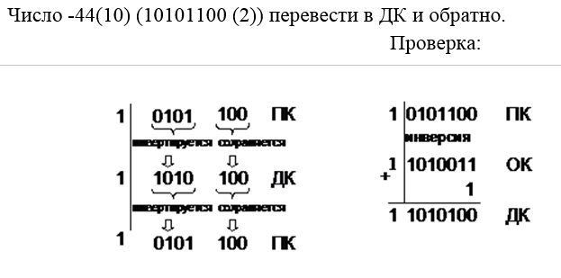
Пример.

Сложение и вычитание в дополнительном коде
При выполнении арифметических операций в современных ЭВМ используется представление положительных чисел в прямом коде (ПК), а отрицательных – в обратном (ОК) или в дополнительном.
Общее правило. При алгебраическом сложении двух двоичных чисел, представленных обратным (или дополнительным) кодом, производится арифметическое суммирование этих кодов, включая разряды знаков. При возникновении переноса из разряда знака единица переноса прибавляется к МЗР суммы кодов при использовании ОК и отбрасывается при использовании ДК. В результате получается алгебраическая сумма в обратном (или дополнительном) коде.
Рассмотрим подробнее алгебраическое сложение для случая представления отрицательных чисел в ДК.
При алгебраическом сложении чисел со знаком результатом также является число со знаком. Суммирование происходит по всем разрядам, включая знаковые, которые при этом рассматриваются как старшие. При переносе из старшего разряда единица переноса отбрасывается и возможны два варианта результата:
• знаковый разряд равен нулю: результат – положительное число в ПК;
• знаковый разряд равен единице: результат – отрицательное число в ДК.
Для определения абсолютного значения результата его необходимо инвертировать, затем прибавить единицу.
Пример.
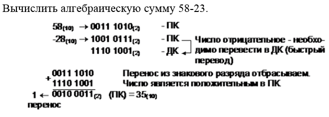
Пример.
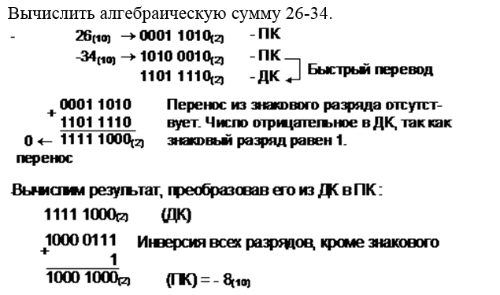
Пример.
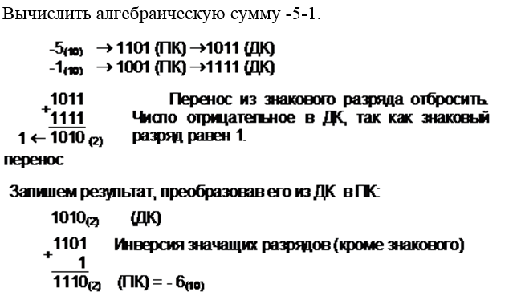
При алгебраическом суммировании двух чисел, помещающихся в разрядную сетку, может возникнуть переполнение, т.е. образуется сумма, требующая для своего представления на один двоичный разряд больше, чем разрядная сетка слагаемых. Предполагается, что положительные числа представляются в прямом коде, а отрицательные - в дополнительном.
Признаком переполнения является наличие переноса в знаковый разряд суммы при отсутствии переноса из знакового разряда (положительное переполнение) или наличие переноса из знакового разряда суммы при отсутствии переноса в знаковый разряд (отрицательное переполнение).
При положительном переполнении результат операции положительный, а при отрицательном переполнении – отрицательный.
Если и в знаковый, и из знакового разряда суммы есть переносы или этих переносов нет, то переполнение отсутствует.
Рассмотрим простейшие примеры с трехбитовыми словами. Диапазон чисел, которые они представляют, равен от -4 до +3. В рассматриваемых словах 1 бит знака и 2 информационных бита.
1. Алгебраическое суммирование без переноса.
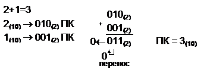
Поскольку перенос в знаковый разряд или из знакового разряда суммы отсутствует, то переполнения нет.
Результат – положительное число в ПК, равное 3.
2. Алгебраическое суммирование с двумя переносами.
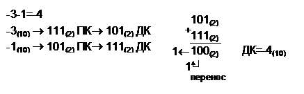
Имеются переносы в знаковый разряд и из знакового разряда вычисляемой суммы, поэтому переполнения нет.
Результат – отрицательное число в ДК, равное -4.
3. Алгебраическое суммирование с одним переносом.
(Положительное переполнение).
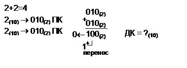
При суммировании есть перенос в знаковый разряд суммы, а перенос из знакового разряда отсутствует, т.е. имеет место положительное переполнение, и результат операции положительный.
Число 4 нельзя представить в прямом коде. Формальный результат равен -4.
4. Алгебраическое суммирование с одним переносом.
(Отрицательное переполнение).
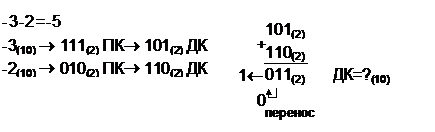
Число -5 нельзя представить 3-битовой комбинацией. Формальный результат равен +3.
Из рассмотренных ранее примеров видно, что арифметические операции в дополнительном коде выполняются достаточно просто. Необходимо только не упускать из виду то, с какими числами происходит работа в данный момент – без знака или со знаком. Поскольку внешний вид обоих чисел одинаков, возможны ошибки.
Бинарное кодирование
Потенциальное кодирование, также называется кодированием без возвращения к нулю (NRZ). При передаче нуля он передает потенциал, который был установлен на предыдущем такте (то есть не меняет его), а при передаче единицы потенциал инвертируется на противоположный. Этот код называется потенциальным кодом с инверсией при единице (NRZI).
NRZ
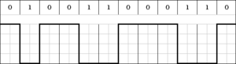
Потенциальный код NRZ (перевёрнутый)
Для передачи единиц и нулей используются два устойчиво различаемых потенциала:
NRZ (прямой):
• биты 0 представляются нулевым напряжением 0 (В);
• биты 1 представляются значением U (В).
NRZ (перевёрнутый):
• биты 0 представляются значением U (В);
• биты 1 представляются нулевым напряжением 0 (В).
NRZI
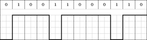
Потенциальный код NRZI
При передаче последовательности единиц, сигнал, в отличие от других методов кодирования, не возвращается к нулю в течение такта. То есть смена сигнала происходит при передаче единицы, а передача нуля не приводит к изменению напряжения.
Достоинства метода NRZ:
— Простота реализации.
— Метод обладает хорошей распознаваемостью ошибок (благодаря наличию двух резко отличающихся потенциалов).
— Основная гармоника f0 имеет достаточно низкую частоту (равную N/2 Гц, где N — битовая скорость передачи дискретных данных [бит/с]), что приводит к узкому спектру.
NRZ (перевёрнутый):
• биты 0 представляются значением U (В);
• биты 1 представляются нулевым напряжением 0 (В).
Недостатки метода NRZ:
— Метод не обладает свойством самосинхронизации. Даже при наличии высокоточного тактового генератора приёмник может ошибиться с выбором момента съёма данных, так как частоты двух генераторов никогда не бывают полностью идентичными. Поэтому при высоких скоростях обмена данными и длинных последовательностях единиц или нулей небольшое рассогласование тактовых частот может привести к ошибке в целый такт и, соответственно, считыванию некорректного значения бита.
— Вторым серьёзным недостатком метода, является наличие низкочастотной составляющей, которая приближается к постоянному сигналу при передаче длинных последовательностей единиц и нулей. Из-за этого многие линии связи, не обеспечивающие прямого гальванического соединения между приёмником и источником, этот вид кодирования не поддерживают. Поэтому в сетях код NRZ в основном используется в виде различных его модификаций, в которых устранены как плохая самосинхронизация кода, так и проблемы постоянной составляющей.
Манчестерское кодирование
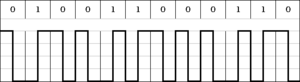
Манчестерское кодирование
При манчестерском кодировании каждый такт делится на две части. Информация кодируется перепадами потенциала в середине каждого такта. Единица кодируется перепадом от низкого уровня сигнала к высокому, а ноль — обратным перепадом. В начале каждого такта может происходить служебный перепад сигнала, если нужно представить несколько единиц или нулей подряд. Так как сигнал изменяется по крайней мере один раз за такт передачи одного бита данных, то манчестерский код обладает хорошими самосинхронизирующими свойствами. У манчестерского кода нет постоянной составляющей (меняется каждый такт), а основная гармоника в худшем случае (при передаче последовательности единиц или нулей) имеет частоту N Гц, а в лучшем случае (при передаче чередующихся единиц и нулей) — N/2 Гц, как и у NRZ. В среднем ширина спектра при манчестерском кодировании в два раза шире чем при NRZ кодировании.
Дифференциальное манчестерское кодирование
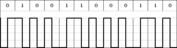
Дифференциальное манчестерское кодирование
При дифференциальном манчестерском кодировании в течение битового интервала (времени передачи одного бита) уровень сигнала может меняться дважды. Обязательно происходит изменение уровня в середине интервала, этот перепад используется для синхронизации. Получается, что при передаче нуля вначале битового интервала происходит перепад уровней, а при передаче единицы такой перепад отсутствует.
Тринарное кодирование
RZ (c возвратом к нулю)
То есть каждый бит передается 3-мя уровнями напряжения. Поэтому требует в 2 раза больше скорости по сравнению с обычной скоростью. Это квазитроичный код, то есть изменение сигнала происходит между 3-мяуровнями.
Биполярный код AMI
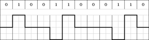
Рисунок 1.5 – Биполярный код AMI
AMI-код использует следующие представления битов:
• биты 0 представляются нулевым напряжением (0 В);
• биты 1 представляются поочерёдно значениями -U или +U (В).
AMI-код обладает хорошими синхронизирующими свойствами при передаче серий единиц и сравнительно прост в реализации. Недостатком кода является ограничение на плотность нулей в потоке данных, поскольку длинные последовательности нулей ведут к потере синхронизации. Используется в телефонии уровня передачи данных, когда используются потоки мультиплексирования.
HDB3
Код HDB3 исправляет любые 4 подряд идущие нули в исходные последовательности. Правило формирования кода следующее: каждые 4 нуля заменяются 4 символами в которых имеется хотя бы один сигнал V. Для подавления постоянной составляющей полярность сигнала V чередуется при последовательных заменах. Для замены используются два способа: 1) если перед заменой исходный код содержал нечётное число единиц то используется последовательность 000V, если чётное то 100V
V- сигнал единицы запрещённого для данного сигнала полярности
кодирование последовательностей из четырех нулей заменяется на код -V, 0, 0, -V или+V, 0, 0, +V — в зависимости от предыдущей фазы сигнала.
Порядок выполнения работы:
1. Получить задание у преподавателя.
2. Выполнить ряд арифметических действий, последовательно преобразуя числа в прямой код, обратный и дополнительный.
3. Ответ представить в двоичном, NRZ, NRZI, Манчестерском и AMI кодах.
4. Оформить отчет.
Содержание отчета:
1. Титульный лист.
2. Цель работы.
3. Краткие теоретические сведения.
4. Вариант задания.
5. Ход работы с пояснениями преобразования кодов.
6. Диаграммы кодирования последовательностей.
7. Выводы по работе.
Контрольные вопросы:
1. Какие коды бывают?
2. В чем состоит смысл кодирования?
3. Какие виды бинарного кодирования существуют?
4. В чем смысл тринарного кодирования?
5. В чем отличие бинарного кодирования от тринарного?
6. В чем смысл манчестерского кодирования?